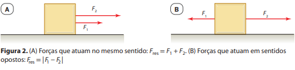

Força
A noção intuitiva que temos sobre força vem de nossa experiência diária. Sabemos que um carrinho de supermercado parado se move se alguém o empurra e, caso ele já esteja em movimento, para pará-lo em algum lugar, temos de puxá-lo no sentido contrário ao de seu movimento. Em todas essas situações, algum agente externo é responsável por colocar esses corpos em movimento ou alterar o movimento já existente, modificando o estado cinemático do corpo. Esse agente externo é denominado força. Portanto, podemos conceituar força como um agente físico capaz de alterar o estado de repouso ou de movimento uniforme de um corpo.
Em 1687, Newton exprimiu essa ideia em sua obra Princípios matemáticos da filosofia natural afirmando que “uma força imprimida é uma ação exercida sobre um corpo a fim de alterar seu estado, seja de repouso ou de movimento, em uma linha reta”
Força é uma grandeza vetorial e, portanto, para que ela seja plenamente caracterizada precisamos especificar sua direção de atuação, seu sentido de orientação e sua intensidade. A unidade de intensidade de força no Sistema Internacional de Unidades (SI) é denominada newton e é representada pelo símbolo N.
Assim, a alteração do estado de movimento de um corpo pode ser causada por uma força ou um conjunto de forças, as quais podem ser analisadas como uma única força chamada de força resultante. A força resultante é a soma vetorial das forças atuantes sobre o corpo. Se as forças atuarem sobre o corpo na mesma direção e no mesmo sentido, a intensidade da força resultante será a soma algébrica das intensidades dessas forças. Se as forças atuarem na mesma direção, mas em sentidos opostos, a intensidade da força resultante será a diferença algébrica entre as intensidades dessas forças
